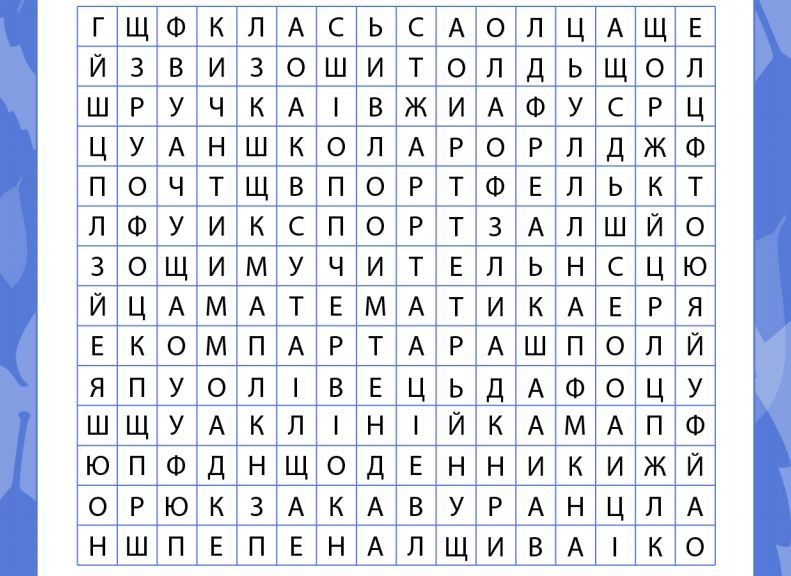
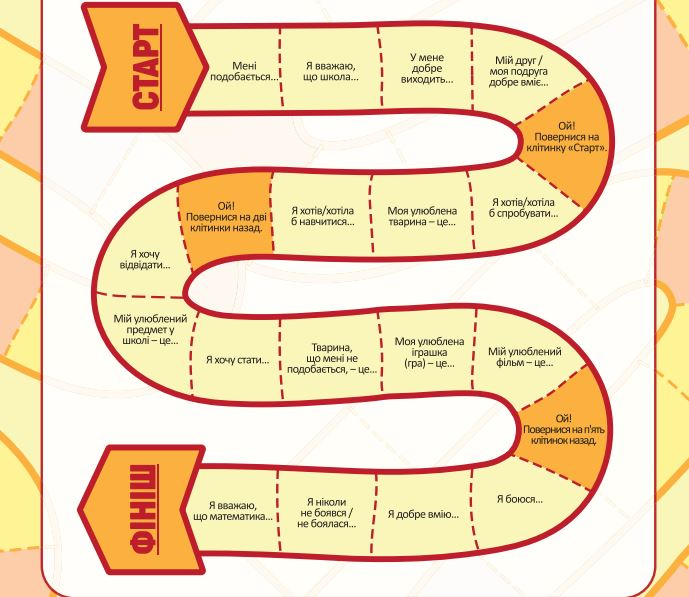

Запитання та завдання для обговорення мультфільму “Наша сила в єдності”
Створюємо осередки класу (до с. 12-13 підручника)
Розповідаємо малятам, які предмети вони можуть знайти в осередках класу
Корисні завдання
Запропонуйте вашому першокласнику розгадати цю просту головоломку та знайти зашифровані в ній 14 слів, що мають відношення до навчання в школі? У кожному рядку цієї головоломки потрібно знайти і обвести ручкою одне слово, а після цього закреслити це слово в списку, який знаходиться внизу сторінки. Завдання допоможе дитині дізнатися написання деяких слів, розвивати уважність, а також попрактикуватися в читанні.
Це завдання допоможе дитині більше дізнатися про своїх співрозмовників і співрозмовниць, розвинути навички читання й комунікації. На сторінці зображено гральне поле з 20 клітинками: клітинки містять речення, що потребують продовження, або вказівки, що відправлять гравця на декілька клітинок назад. По черзі кидаючи гральну кісточку, гравці переміщують свої фішки й відповідають на запитання з тих клітинок, на яких зупиняються. Переможе той, хто першим дійде до фінішу. Пропонована гра розвиває уважність, вміння слухати, емоційний інтелект і уяву.
